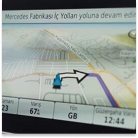
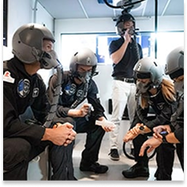

Misi Kami
Menjadi perusahaan yang kuat dengan menciptakan produk-produk unggulan untuk otomotif, penerbangan, kelautan, outdoor, dan olahraga yang merupakan bagian penting di kehidupan pelanggan kami.

Visi Kami
Menjadi pemimpin global di setiap pasar pelayanan kami, dan produk kami akan dicari karena desainnya yang menawan, berkualitas tinggi, dan harga terbaik.
Nilai Kami
Pondasi budaya kami adalah kejujuran, integritas, dan rasa hormat terhadap para rekan, pelanggan, dan mitra bisnis. Setiap rekan berkomitmen penuh untuk melayani pelanggan dan rekan lainnya dengan memberikan performa tinggi dan memenuhi apa kami janjikan.
Sejarah
-

1993
Memperkenalkan GPS 95, unit GPS portabel pertama di dunia untuk penerbangan.
Saat navigasi masih asing untuk sebagian besar orang, GPS 95 telah mampu melacak hingga 8 satelit sekaligus sembari terus memperbarui jalur penerbangan. GPS 95 menggunakan antarmuka grafis terdepan di industri sehingga operasinya lebih intuitif; bahkan juga dapat menyimpan hingga 500 jalur dan jalur kepulangan. Informasi yang ditampilkan meliputi jarak, waktu, estimasi konsumsi bahan bakar, waktu matahari terbit dan terbenam di lokasi asal dan tujuan, estimasi ketinggian sebelum mendarat, dan kecepatan terbang waktu nyata. Fungsionalitas dan kemudahan pengoperasiannya sudah diakui oleh banyak pilot.
-

2013
Menjadi penyedia sistem navigasi dasbor untuk Mercedes-Benz.
Selama bertahun-tahun, Garmin memasok sistem navigasi dalam mobil untuk produsen otomotif besar sehingga telah berpengalaman dalam mengembangkan sistem keselamatan aktif yang muskhir demi membamu pengenudi meng dentikasi potengi bahaya dan menghinar tabreakan, sten n fetainmen MAP PILOT men gunakan suara dan semtuhan, damatan akli Dipilih oleh Daimler sebagai mitra solusi navigasi tingkat pertama menjadi motivasi bagi Garmin untuk menjaga kemampuan R&D yang kuat dan kualitas produk yang luar biasa.
-

2024
Garmin Health merayakan 10 tahun dengan lebih dari 1.000 studi kesehatan global, termasuk misi luar angkasa bersejarah Polaris Dawn.
Garmin Health memasuki tahun ke-10 dengan pencapaian besar dalam mendukung lebih dari 1.000 penelitian di seluruh dunia dalam bidang tidur, kesehatan, rehabilitasi, dan aktivitas fisik. Secara khusus, Garmin memainkan peran penting dalam misi luar angkasa bersejarah Polaris Dawn, di mana Garmin fenix 7 digunakan untuk pemantauan biometrik secara terus-menerus, memberikan data berharga untuk kemajuan penelitian penerbangan luar angkasa manusia.
-
Be Part
Of Our
Story!
Contact Us
Name: Farrel Aditya
Email: 5026231177@student.its.ac.id
Contact Number: 081211911943
Name: Farrel Aditya
Email: 5026231177@student.its.ac.id
Contact Number: 081211911943